📅 このページについて
ゲーム内の定期・季節イベント情報をまとめています。
外部作品とのコラボ情報は →コラボ情報ページ をご覧ください。
✅ このページで扱う内容
- 周年記念イベント
- 季節イベント(夏・冬など)
- 大会記念イベント
- ゲーム内ストーリーイベント
❌ コラボページで扱う内容
- アニメ・漫画コラボ
- 企業コラボ
- リアルイベント
- グッズ販売情報
📆 2025年イベントカレンダー
過去の傾向から予測される今後のイベントスケジュール
4、6月
- 🔮 新春イベント（予想）
- 🔮 夏季イベント（予想）
12月
- ✅ クリスマスイベント復刻
- ✅ クリスマスイベント
2026年2月
- ✅ 新春イベント「千灯が輝き 万家を照らす」
※予想は過去3年の開催パターンに基づいています。公式発表があり次第更新します。
開催中・過去のイベント一覧
シュティレヴァルトの舞踏会
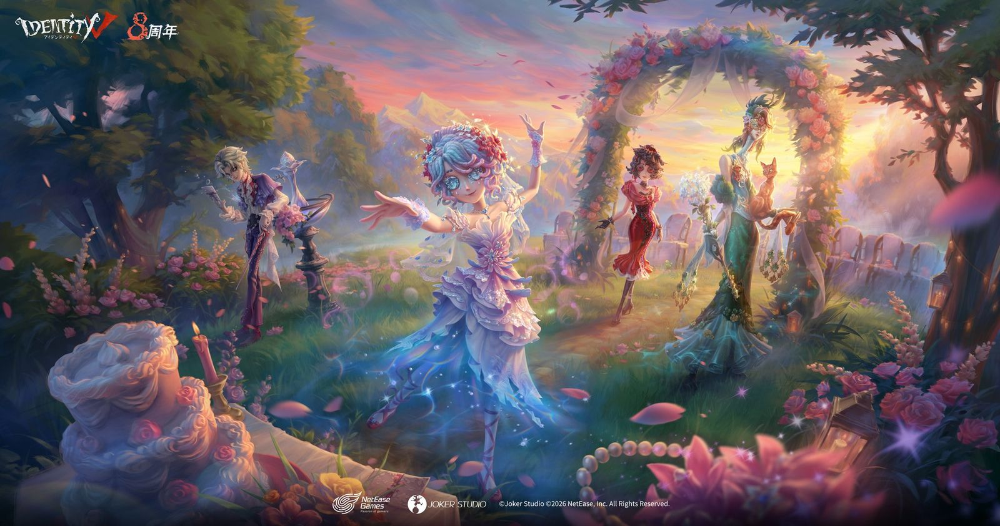
2026年7月2日メンテナンス後～2026年7月29日23時59分
花間の伝言
毎日ログインに参加すると、以下のログインボーナスを獲得できます。
- イベントアイコン
- スコープ
- 欠片 など
ログイン補填：補填開放後、霊感を10消費してログイン補填を行うことができます。
補填期間：2026年7月10日0時～7月29日23時59分
宴に出席
空白の招待状に導かれ、Missトゥルースはシュティレヴァルトへ到着。水妖の伝説で知られるこの街で盛大な結婚式が挙げられるが、彼女が到着した時、式はすでに終わっており、そこで新たな事件が彼女を待ち受けていた。事件調査を行い、ストーリーを進めて調査進捗を累積すると：
- イベントSR衣装
- SR携帯品 など
林間のダンス
水妖となってダンスエリアから森を駆け抜け、町からできるだけ多くの旅人を舞踏会へ連れ戻す。連れ戻した旅人によって対応するポイントが異なり、累計ポイントが最も高いプレイヤーが勝利。
イベントモード参加で獲得：
- イベントSSR家具「誓いの石碑」
- SR衣装解放カード
- タグ など
ゲストへのお礼
毎週の指定タスクを完了すると、以下のボーナスを獲得できます。イベントタスクは2週間に分かれて順次開放。全てのイベントタスク完了でSSR衣装解放カードを獲得。
- SSR衣装解放カード
- 動く落書き
- ランクポイント保護カード など
炎昼の海声
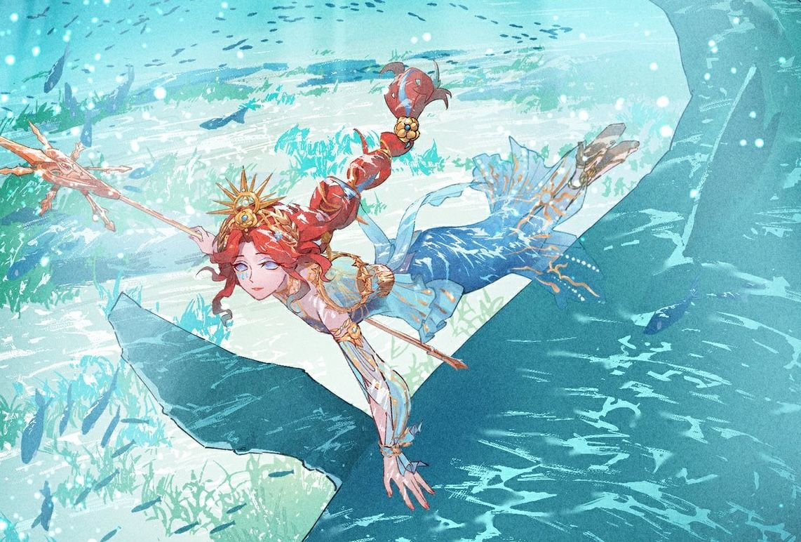
2026年6月25日メンテナンス後～2026年7月15日23時59分
海観察日記
毎日ゲームにログインし、日記を描くとイベントへのログインを完了。
- 【アイコン枠】潮汐の声
- 【落書き】漁師-夏の涼味
- ホール音符、手掛かり など
ペラガヤ
毎日のストーリーを読み終えると「ホラ貝」×4を獲得（7日間で合計28個）。ストーリー内の選択によってキャラの好感度が変化し、異なる結末へ導かれます。好感度を上げるとより多くの背景ストーリーを解放できます。
対戦ドロップ
マルチ戦、ランク戦、混沌紛争、五人ランク戦、手記の加筆に参加すると「ホラ貝」を1日28個まで獲得（合計84個）。
深海の宝探し
キャラを1名選択して「深海の宝探し」に入り、潜水艇の鉤爪を操作して海底で宝を掴み取る。1回参加で「ホラ貝」×2獲得（1日4個まで、合計56個）。
「海の声」
「霧海の宝探し」公共マップで海洋生物を助けると【ホラ貝】×2獲得（合計28個）。
イベントショップ
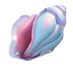
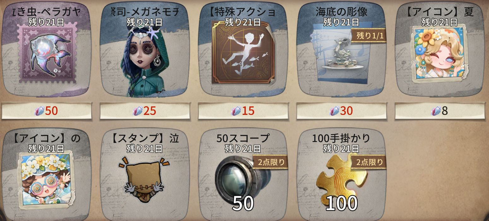
「ホラ貝」で交換できます：
- 泣き虫SSR携帯品-ペラガヤの心
- 祭司SR衣装-メガネモチノウオ
- SR家具-海底の彫像
- 【特殊アクション】心眼-水中を漂う
- 【アイコン】夏の涼味、のどかな潮騒
- 【エモート】ばぁっ！
- サマースコープパック、手掛かりパック など
心眼-のびやかな夏パック

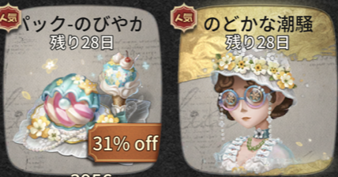
31%オフの割引価格でショップにて期間限定販売。
- 通常価格：3956エコー
- 割引価格：2688エコー
パック内容：
- 【UR衣装】心眼-のどかな潮騒 → 2888エコー/12888欠片でも購入可
- 【SSR携帯品】心眼-貝殻シュークリーム → 1068エコー/3888欠片でも購入可
販売期間：2026年6月25日メンテナンス後～7月22日23時59分
漁師-サマーレモンパック
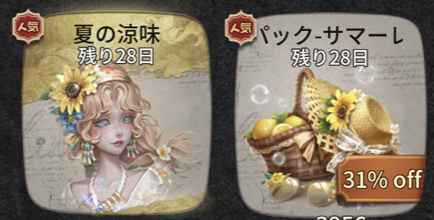
31%オフの割引価格でショップにて期間限定販売。
- 通常価格：3956エコー
- 割引価格：2688エコー
パック内容：
- 【UR衣装】漁師-夏の涼味 → 2888エコー/12888欠片でも購入可
- 【SSR携帯品】漁師-レモンサングラス → 1068エコー/3888欠片でも購入可
販売期間：2026年6月25日メンテナンス後～7月22日23時59分
イベントテーマ家具
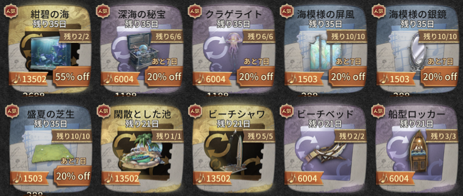
【UR家具】紺碧の海 → 通常2688エコー/11688手掛かり、イベント期間中55%オフで1208エコー（最大2個）
【SSR家具】
- 深海の秘宝 → 通常1188エコー/4188手掛かり、初週950エコー（最大6個）
- クラゲライト → 通常1188エコー/4188手掛かり、初週950エコー（最大6個）
【SR家具】
- 海模様の銀鏡 → 通常288エコー/1088手掛かり、初週230エコー（最大10個）
- 海模様の屏風 → 通常288エコー/1088手掛かり、初週230エコー（最大10個）
- 盛夏の芝生 → 通常288エコー/1088手掛かり、初週230エコー（最大10個）
家具パック販売
イベントテーマ家具SSRパック → 55%オフで1068エコー（エコーのみ、最大6個購入可）
- 深海の秘宝×1、クラゲライト×1が含まれます
イベントテーマ家具SRパック → 55%オフで388エコー（エコーのみ、最大10個購入可）
- 海模様の銀鏡×1、海模様の屏風×1、盛夏の芝生×1が含まれます
販売期間：2026年6月25日メンテナンス後～7月29日23時59分
「霧海の宝探し」期間限定公共マップ
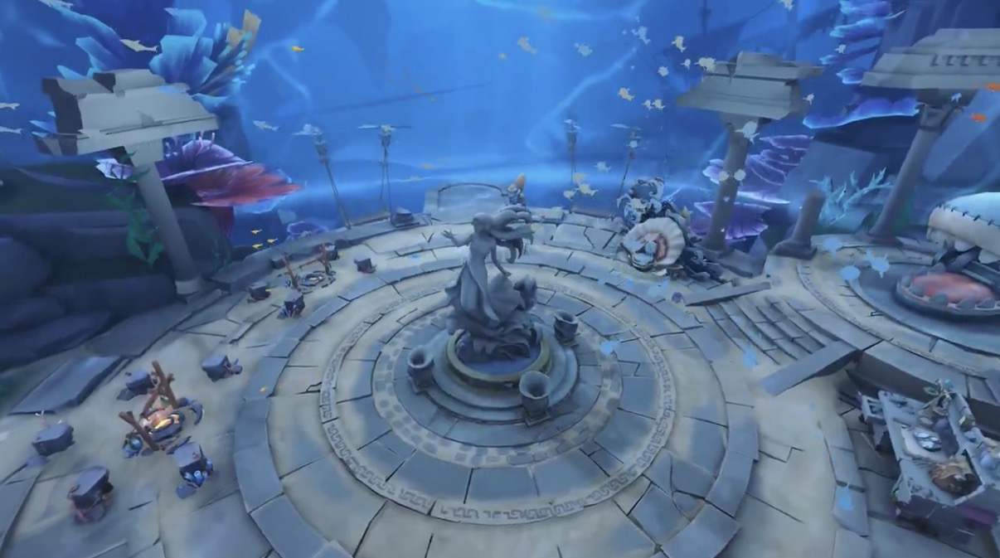
期間限定水中公共マップ「霧海の宝探し」が開放！
- イベント期間：2026年6月25日メンテナンス後～2026年9月24日メンテナンス前
- 開放時間：24時間
- 花火ショー：2026年6月26日～7月12日、毎日19時～24時（1時間ごとに1回）
イベントボーナス：
- 【SSR家具】貝殻の椅子、サメの歯パニック
- 【落書き】海底の精霊
- 友情ポイント、欠片 など
モード説明
- ダイビング：深水エリアから三層に広がる海域を探索。浅瀬で資源を拾い、深海の財宝を探し、深淵の魚王に挑戦。酸素が尽きると所持品を失います。
- バブルガン採集・加工：バブルガンで魚・カニ・クラゲを捕獲。貝殻の鉱石は接近で採集。調理台・加工台で酸素ボンベや便利アイテムを製造。ウミガメ・マンタに乗ると移動速度向上＆酸素消費軽減。
- 特殊イベント：7月2日より発光魚群がランダム出現。7月9日からは三大魚王が順次登場。全員で力を合わせて討伐し、豪華な戦利品を獲得。
- サメの歯パニック：浅水エリアの複数人向けアトラクション。巨大サメ頭に挑戦。
- ビーチブラシ：砂浜に自由に文字を書けます。
- その他サプライズ：「焚火で語る秘密」ミニゲーム再登場。カスタマイズダンスに全ハンター新アクション追加。6月25日～7月12日は深海テーマのライトアップ開催。
夢織の兎のプレゼント

2026年5月27日メンテナンス後～2026年6月17日23時59分
デイリーログイン
毎日ゲームにログインし、ドリームキャッチャーをタップするとイベントへのログインを完了。
- 【スタンプ】あれ？
- 【アイコン枠】針が紡ぐ夢 など
イベントシナリオ
ストーリーは7日間に分かれており、時間経過と共に開放されます。
- 毎日のストーリー完了 → 「夢織の毛糸玉」10個（合計70個）
- 1日目完了 → 【SSRタグ】朧げな夢
- 全てのストーリー完了 → 【居館音楽】夢織の庭
夢織の兎を追って
夢遊の紳士を操作して夢境の花園を進み、夢織の兎を追いかけてポイントを獲得。「夢境の小箱」がドロップし、開けると：
- 「夢織の毛糸玉」または夢の欠片を1日20個まで獲得
夢綴る言葉
「夢境の小箱」から獲得した夢の欠片を自由に組み合わせ、【SSRタグ】に再記録できます。
※イベント終了後、タグテキストは変更不可
対戦ドロップ
対戦参加で「夢織の毛糸玉」1日50個まで獲得（合計250個）
イベントショップ


- 以下の豪華ボーナスを交換できます：
- 【SSR衣装】小説家-夢遊の紳士
- 【特殊アクション】破輪-夢を掴む
- 【特殊アクション】小説家-夢を描く
- 【アイコン】夢織の兎
- 【落書き】破輪-休憩
- 【落書き】小説家-閃き など
特殊アクション再登場
- 曲芸師-プレゼントを受け取る
- 画家-プレゼントを受け取る
- 玩具職人-プレゼントを受け取る
販売期間：2026年5月27日メンテナンス後～6月10日23時59分 割引価格：98エコー（エコーでのみ購入可能）
イベントテーマ家具


【SSR家具】
- だまし絵マット → 通常1188エコー/4188手掛かり、イベント期間中688エコー（最大6個）
- ラビットゴーランド → 通常1188エコー/4188手掛かり、イベント期間中688エコー（最大6個）
【SR家具】
- 夢織バルーン → 通常288エコー/1088手掛かり、イベント期間中168エコー（最大10個）
- 夢織ポールハンガー → 通常288エコー/1088手掛かり、イベント期間中168エコー（最大10個）
- 夢織の兎壁掛けラグ → 通常288エコー/1088手掛かり、イベント期間中168エコー（最大10個）
販売期間：2026年5月27日メンテナンス後～2026年7月1日23時59分
eスポーツシリーズ販売開始

2026年4月30日メンテナンス後～2026年5月27日23時59分
🎮 Game on! We are Team BLK!
バッツマン-eスポーツシリーズ衣装パック
20%オフの割引価格でショップにて期間限定販売！
- 通常価格：3276エコー
- 割引価格：2618エコー
パック内容：
- 【SSR衣装】バッツマン-BLK.GANJI
- 【UR携帯品】バッツマン-飛躍
個別販売：
- 【SSR衣装】バッツマン-BLK.GANJI → 1388エコー
- 【UR携帯品】バッツマン-飛躍 → 1888エコー
芸者-eスポーツシリーズ衣装パック
20%オフの割引価格でショップにて期間限定販売！
- 通常価格：3276エコー
- 割引価格：2618エコー
パック内容：
- 【SSR衣装】芸者-BLK.MAI
- 【UR携帯品】芸者-変遷
個別販売：
- 【SSR衣装】芸者-BLK.MAI → 1388エコー
- 【UR携帯品】芸者-変遷 → 1888エコー
その他新衣装

以下の衣装がショップに登場。1388エコーまたは4888欠片でご購入いただけます。
- 【SSR衣装】道化師-オーバービート
- 【SSR衣装】応援団-協律の反響
- 【SSR衣装】機械技師-差動装置
同時に、これらの衣装は金リンゴショップにも追加され、63800金リンゴでご購入いただけます。
🔄 eスポーツシリーズ再登場

SSR衣装（1388エコー）
- 道化師-OPH.JOKER
- 応援団-OPH.LILY
- 傭兵-OPH.NAIB
- 骨董商-OPH.QI
- 「囚人」-OPH.LUCA
- 納棺師-BLK.AESOP
- 占い師-BLK.ELI
- 機械技師-BLK.TRACY
SSR衣装（1388エコーまたは4888欠片）
- 骨董商-破裂する音
- 「囚人」-震える時の調べ
- 傭兵-奇怪な弦音
UR携帯品（1888エコー）
- 道化師-躍進の強音
- 応援団-渦動
- 傭兵-転回
- 骨董商-再構築
- 「囚人」-無限
- 納棺師-相転移
- 占い師-共感
- 機械技師-超知能
🎁 限定衣装割引券プレゼント
eスポーツシリーズ再登場期間中、ゲームにログインすると【限定衣装割引券】1枚を獲得できます。
対象衣装（25%オフ）：
- 傭兵-奇怪な弦音
- 「囚人」-震える時の調べ
- 骨董商-破裂する音
- 応援団-協律の反響
- 道化師-オーバービート
- 機械技師-差動装置
リベロの「天外の来客」

2026年4月2日メンテナンス後～2026年4月22日23時59分
📖 イベント概要
「星を祭る者」事件で出会った「レディ・ドーン」について調査するため、Mr.リーズニングはかつての戦友であるロナードに話を聞くことにした。このゴールデンローズ劇場の新たな主人との会話を通じて、Mr.リーズニングはクロートーがすでに劇場を去り、別の劇場で名声を得ていること、さらに港町で開催される飛行大会にゲストとして招かれていることを知る。Mr.リーズニングと共に、リベロの調査へ向かおう！
イベントにはログイン・イベントストーリー・飛行大会ミニゲーム・公共マップなどが含まれます。
🔍 イベントストーリー
Mr.リーズニングと共に事件調査を完了し、ストーリーの調査進捗を進めると、以下の豪華ボーナスを獲得できます。

- 【衣装】気象学者-気象観測
- 【携帯品】サバイバー-飛行大冒険
- 待機モーション解放カード
ストーリー開放時間
- 第二章：2026年4月9日メンテナンス後に開放
- 第三章、エピローグ：2026年4月16日メンテナンス後に開放
📅 デイリーログイン
イベントに参加してログインを行うと、以下の豪華ボーナスを獲得できます。
- イベントアイコン
- イベントアイコン枠
- 手掛かり
- 欠片 など
✈️ 飛行大会ミニゲーム
ミニゲームに参加してより遠い飛行距離を目指すと、以下の豪華ボーナスを獲得できます。
- 【SSR家具】海上の城
- SR衣装解放カード
- 特殊アクション解放カード
- キャラ解放カード
- 手掛かり
- 欠片
- スコープ など
🌊 期間限定公共マップ「海辺の町」

町では盛大な祭りが開かれている。共に海辺の宴へ赴こう！期間限定公共マップ「海辺の町」が開放！
イベントボーナス：
- SSR家具
- 居館音楽
- イベント落書き など
📓 飛行訓練ノート
勇者の心飛行大会がまもなく開始！ノートに記された準備作業をチェックし、各作業タスクを完了しましょう。
ボーナス：
- SSR衣装解放カード
- 動く落書き
- ランク戦保護カード など
タスク解放期間
- 1週目タスク：2026年4月2日メンテナンス後～2026年4月22日23時59分
- 2週目タスク：2026年4月9日0時～2026年4月22日23時59分
エイプリルフールイベント2026
2026年3月26日メンテナンス後～2026年5月6日23時59分
📖 荘園の秘密の儀式
本棚の片隅で古びたノートを発見。不気味で理解しがたい内容に、ゾッとしながらも期待を覚える。この「秘密の儀式」は、荘園の奥に潜む秘密へあなたを導いてくれるだろう……

儀式に必要なタスクを完了すると、以下の豪華ボーナスを獲得できます。
- 【SSR衣装】「アンデッド」-カーニバルタイム
- 【SSR家具】ロケットチェア
- 【アイコン】カーニバル……タイム
- 【スタンプ】お願い
🎭 エイプリルフール期間限定モード
通常の対戦に体型変化・暗号機チェイス・ロケットチェアチェイス・ミミックなどのユニークな要素が加わった期間限定モード。この特別な一日を、いつも以上に楽しみましょう！
👤 サバイバー：体型変化
体型拡大
- 条件：一定時間ハンターを牽制／暗号機を追撃／一定進捗解読
- 効果：板を落とす速度が上昇。板当て・コントロール系スキル使用時、ハンターの気絶時間やコントロール効果の持続時間が延長
- デメリット：板・窓の乗り越え速度が低下
体型縮小
- 条件：攻撃を受ける／道具箱を使う／暗号機の調整失敗
- 効果：板・窓の乗り越え速度が上昇。最小まで縮むと落とされた木の板を直接通り抜け可能
- デメリット：板を落とす速度が低下。板当て時のハンター気絶時間が短縮
🔪 ハンター：体型変化
体型拡大
- 条件：サバイバーに攻撃命中／サバイバーをロケットチェアに拘束
- 効果：攻撃範囲拡大。板の破壊速度上昇。受けるコントロール効果の持続時間が短縮
- デメリット：窓の乗り越え速度が低下
体型縮小
- 条件：一定時間サバイバーに攻撃が命中しない／サバイバーからのコントロール効果が一定時間累積
- 効果：窓の乗り越え速度が上昇。最小まで縮むと落とされた木の板を直接乗り越え可能
- デメリット：攻撃範囲が縮小。板の破壊速度が低下
💻 暗号機チェイス
マップ内の暗号機はチェイス可能。サバイバーが近づくと逃げ出します。サバイバーが暗号機を追いかけている間、暗号機のサイズが大きくなると同時に解読進捗も増加していきます。解読進捗が一定値に達すると、暗号機は逃げなくなります。
🪑 ロケットチェアチェイス
サバイバーがダウンする度、ロケットチェアがチェイス可能な状態になり、サバイバーとハンターのどちらも追いかけることができます。ロケットチェアは、ダウンしたサバイバーに近づくと自動でサバイバーを拾い上げます。
ハンターが「アンデッド」の対戦で、ロケットチェアがダウン状態のサバイバーに近付くと、「アンデッド」の姿になります。同時に、このサバイバーはこのエリアから離れられなくなります。
📦 道具箱ミミック
マップ内にある一部の道具箱はミミックに変化します。ミミックはアイテムを取ろうとするサバイバーに噛みつくので、注意してください！
新春イベント2026

2026年2月12日メンテナンス後～2026年4月2日メンテナンス前
🏮 テーマイベント「千灯が輝き 万家を照らす」
旧正月の灯祭を舞台にしたテーマイベント。参加報酬として共通SSR衣装解放カード・サバイバー共通携帯品-パカラッ・SR衣装傭兵-提灯持ち・特殊アクションなどを獲得できます。
一、灯祭準備
灯祭会場のレイアウトをデザインし、初めてシェアすると【スタンプ】新年の挨拶を獲得。
二、福暦ログイン
2月12日～3月4日23時59分毎日ログインして新年カレンダーに落書きを描くとログイン完了。
三、賞灯逸話
8日間にわたるストーリー。1日分の進度を完了するごとに「灯祭の軽食」×20を獲得。
四、切り絵灯制作
6面の切り絵灯をカスタマイズして「チャイナタウン千灯閣」に展示できます。完成した作品は居館家具として設置可能。毎日初回制作で「灯祭の軽食」×10を獲得。
五、イベントショップ
 2月16日0時～3月4日23時59分
2月16日0時～3月4日23時59分
対戦参加で「灯祭の軽食」を1日最大20個獲得。期間限定ショップで共通SSR衣装解放カード・パカラッ・SR衣装傭兵-提灯持ちなどと交換できます。イベント終了後、未使用分は1:2で手掛かりに変換されます。
六、灯謎の趣
任務達成でなぞなぞランタンを解き明かし【アイコン】上元節を迎えるなどを入手。全タスク完了で【特殊アクション】泣き虫-飴細工を獲得。
期間限定公共マップ「華灯の新年」
 2月12日メンテナンス後～4月2日メンテナンス前／24時間開放
2月12日メンテナンス後～4月2日メンテナンス前／24時間開放
花火ショーは2月15日～23日、毎晩19時～24時（1時間ごとに1回・各15分）に開催。

イベントボーナス：
- 写真撮影タスク完了 → 【特殊アクション】ハンター-花灯
- 幸運元宝収集 → 【SSR家具】金雪迎春・灯影の新年と交換可（交換期間：2月17日0時～4月2日メンテナンス前）
- その他タスク → 【落書き】大漁に恵まれますように・友情ポイント・欠片など
娯楽モード（2月15日～23日 毎晩19時～24時）
- 新春灯祭：お年玉の使者への挨拶で幸運元宝を獲得。フロート車のパレードにも参加できます。
- 元宝お年玉：3分ごとに30個出現。異なる数の金の元宝を獲得。
- 福縁お年玉：自分でお年玉を投入し他プレイヤーにシェア可能。3分ごとに30個出現。
- 盛運お年玉：一定確率で手掛かり・欠片・体験カード・永久衣装などを獲得。2月15日～18日の毎晩20時・20時15分と2月17日0時・0時15分、合計10回開催（1回3個）。
- 花灯集会：ショップで5種の手作り花灯をランダム購入。2月15日～23日の夜は提灯持ちから残り4種も購入可。
- 一緒に爆竹作り：協力して最長の爆竹を作成。失敗するとリセット！
- 大食い王チャレンジ：懸鑑楼オーナーに話しかけると餃子大食いに挑戦できます。
- その他サプライズ：新年の礼砲・彩りの壁・ダウトカード・新春の祈りなど期間限定コンテンツが再登場。
春節期間限定モード
通常の1V4対戦に龍舞・爆竹・春聯の3スキルを追加した期間限定モードです。
龍舞（サバイバー限定）
スキルを使うと「龍首」として前方にダッシュし、仲間と連結して龍を形成できます。連結人数が増えるほど移動速度・操作速度・ダッシュ距離が上昇。「龍身」プレイヤーは「尾を振る」でハンターをノックバック・気絶させることも可能。ダウンや一部のコントロール効果で即座に連結解除されます。
爆竹（ハンター限定）
指定位置に爆竹を投げて範囲内の全キャラを爆散させます。長押しで爆発範囲と威力を3段階まで増加可能。爆竹の爆発は龍舞の連結を解除します。なお、サバイバーがいるロケットチェア付近では使用不可。
春聯
ゲーム開始時に1枚獲得。マップの「門」に貼ることで効果を発動できます。
サバイバー春聯：
- 納吉辟邪：ハンターが通過すると逆方向に弾かれる
- 健康長寿：サバイバーが通過すると5秒間シールド獲得
ハンター春聯：
- 不朽威名：サバイバーが通過すると逆方向に弾かれる
- 送故迎新：裏向きカードのクールタイムがなくなり効果を1回追加獲得
春聯使用後、一定条件（解読完了・救助・チェア拘束など）を満たすと一定確率で再獲得できます。
Call of the Abyss Ⅸ

2025年12月31日～2026年1月29日(決勝戦は2026年4月開催)
概要
御客様の皆さん、Call of the Abyss Ⅸ祭典会場へようこそ。今回の祭典は【聖礼の間】、【神遊の祭り】、【光の聖壇】、【終焉の問い】の4つの段階に分けられています。
【聖礼の間】祭典ウォーミングアップ段階
2025年12月31日メンテナンス後～2026年1月8日メンテナンス前この段階では祭典イベントにエントリーすることができます。エントリー期間は2025年12月31日メンテナンス後から2026年1月15日9時までとなります。エントリーに成功した戦隊のメンバーは【神遊の祭り】段階が正式に開始すると参加できます。
【神遊の祭り】祭典予選段階
2026年1月8日メンテナンス後～2026年1月22日メンテナンス前戦隊はこの段階で【神遊の祭り】の対戦に参加することでポイントを獲得でき、ポイントランキングTOP100(一部の地区では50)の戦隊は【光の聖壇】に進出できます。祭典期間中、対戦に参加すると大量の祭典限定ボーナスを獲得できます。ボーナスを獲得できるイベントはCOA決勝戦が5月に終了するまで持続します。

祭典ボーナス：
- 深淵の秘宝Ⅸ×20
- 【SSR衣装】記者-「流離いの帰途」
- 【SR衣装】隠者-聖河の管理者
- 【SRペット】グレーフェザー
- 【料理】サバイバー-ライスプディング
- 【料理】サバイバー-イカスミパスタ
- 【特殊アクション】「騎士」-挑発
- Call of the Abyssテーマアイコン、落書きなど
【光の聖壇】祭典昇段戦段階
2026年1月22日メンテナンス後に開放、1月29日メンテナンス後に集計【神遊の祭り】段階でTOP100(一部の地区では50)に入った戦隊は【光の聖壇】の対戦に参加してポイントを獲得できます。ポイントランキングTOP8(日本地区では6)の戦隊はCOA Ⅸ予選に参加できます。TOP8(日本地区では6)の中にCOA Ⅸ予選/決勝戦に進出した戦隊がいた場合、順位は繰り下げられます。
※欧米サーバーの集計時間はサーバー時間1月29日の夜となります。
【終焉の問い】戦隊順位展示段階
2026年1月29日メンテナンス後に開放【光の聖壇】の各地区のTOP8(日本地区では6)戦隊が後続するCOA Ⅸ予選に招待されます。各地区の予選は2026年2月に順次開放され、決勝戦は2026年4月に開催されます。
祭典が開始しました！さあ、共にこの聖城を探索しましょう！
深淵の秘宝Ⅸが開放！

- UR衣装：写真家-「恒久の光」
- SSR衣装：「レディ・ファウロ」-蒼白の冠、画家-藍色の暗面、「騎士」-気儘な歓歌、火災調査員-匣の中の焔
- SR衣装：幻灯師-楽園の流離人、冒険家-陰謀論者、時空の影-恐怖の物語集、空軍-漆黒の神官
深淵の秘宝再登場
Call of the Abyss Ⅸ Global Festivalイベントの開催に向けて、以下の深淵の秘宝が期間限定で再登場します。
- 【深淵の秘宝Ⅲ】
- 【深淵の秘宝Ⅳ】
- 【深淵の秘宝Ⅴ】
- 【深淵の秘宝Ⅵ】
- 【深淵の秘宝Ⅶ】
- 【深淵の秘宝Ⅷ】
eスポーツシリーズ衣装パック

- パック内容：深淵の秘宝Ⅸ×10
- 割引価格576エコーで3回までご購入いただけます。
衣装の残影衣装


- 上記の衣装が4888欠片で購入可能！
スコープ衣装

- 上記の【SSR衣装】は500スコープで購入可能！
- 上記の【SR衣装】は100スコープで購入可能！
エコーでも交換可能！
- 衣装の残影衣装一覧は1388エコーでも交換可能！
Game on 占い師-eスポーツシリーズ衣装イベント

2026年1月1日～2026年1月28日
概要

Game on 占い師-eスポーツシリーズ衣装パック
- パック内容：【SSR衣装】占い師-BLK.ELI、【UR携帯品】占い師-共感
- 20%オフの割引価格でショップにて期間限定販売されます。販売価格3276エコー、割引価格2618エコーでご購入いただけます
エコーで交換可能！
- 【SSR衣装】占い師-BLK.ELIが1388エコーで購入可能！
- 【UR携帯品】占い師-共感が1888エコーで購入可能！
クリスマスイベント

2025年12月18日～2026年1月7日
概要
- デイリーログインで【SSR家具】雪の精霊ドンドンと【アイコン枠】細雪の冬を獲得可能！
「積雪ギフト」衣装など
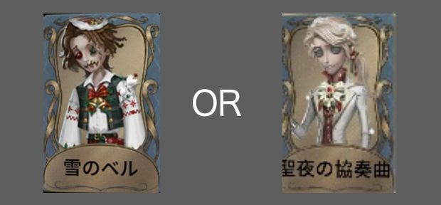
- 上記の【SR衣装】作曲家-聖夜の協奏曲or【SR衣装】人形師-雪のベルは800「積雪ギフト」購入可能(購入はどちらか一回まで)
- 【アイコン】クリスマスの祈り、【スタンプ】演奏、【スタンプ】挨拶なども交換可能！
衣装の残影衣装
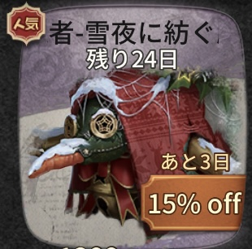
- 上記の衣装が4888欠片で購入可能！
手掛かり家具
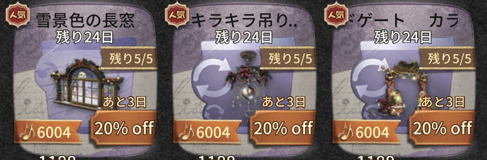
- 上記の【SSR家具】は4188手掛かりで購入可能、【SR家具】は1088手掛かりで購入可能！
エコーでも交換可能！
- 衣装の残影衣装一覧は1388エコーでも交換可能！
- 手がかり家具一覧は1188エコー、288エコーでも交換可能！
クリスマス復刻イベント
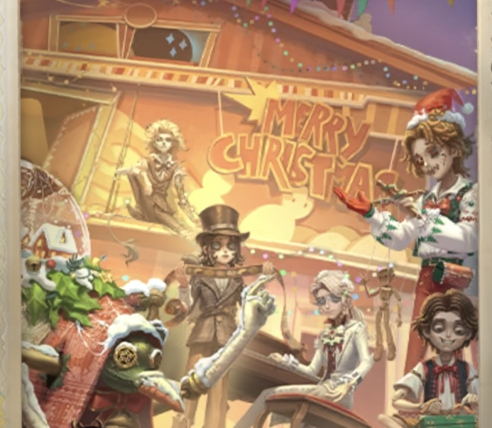
2025年12月11日～2025年1月7日
概要
衣装の残影衣装
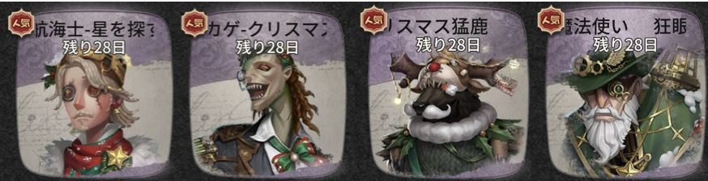
- 上記の衣装が4888欠片で購入可能！
スコープ衣装、ペット
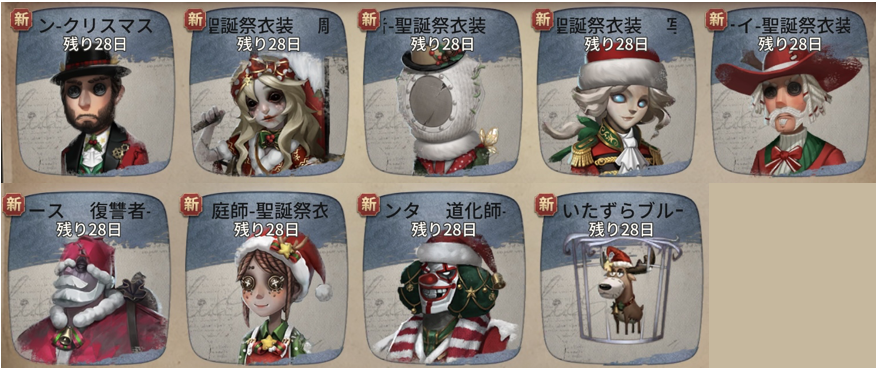
- 上記の【SR衣装】は100スコープで購入可能！
- 上記の【SRペット】は80スコープで購入可能！
手掛かり家具
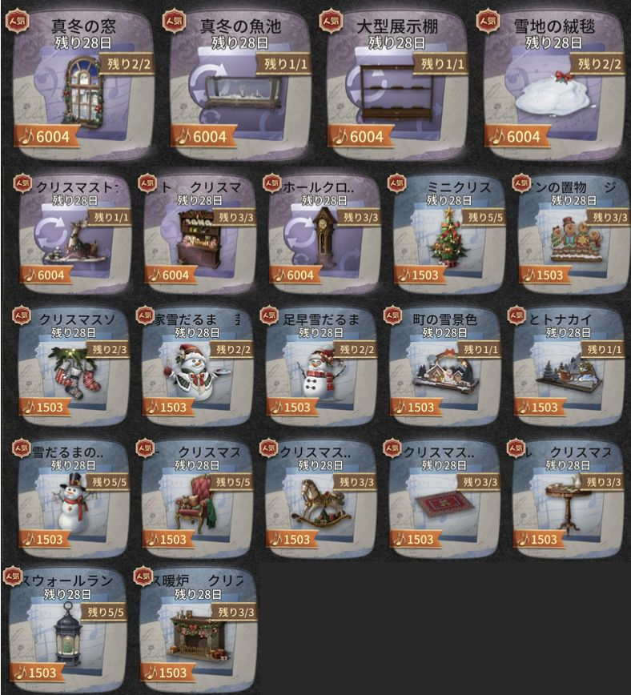
- 上記の【SSR家具】は4188手掛かりで購入可能、【SR家具】は1088手掛かりで購入可能！
エコーでも交換可能！
- 衣装の残影衣装一覧は1388エコーでも交換可能！
- 手がかり家具一覧は1188エコー、288エコーでも交換可能！
拡張パックイベント
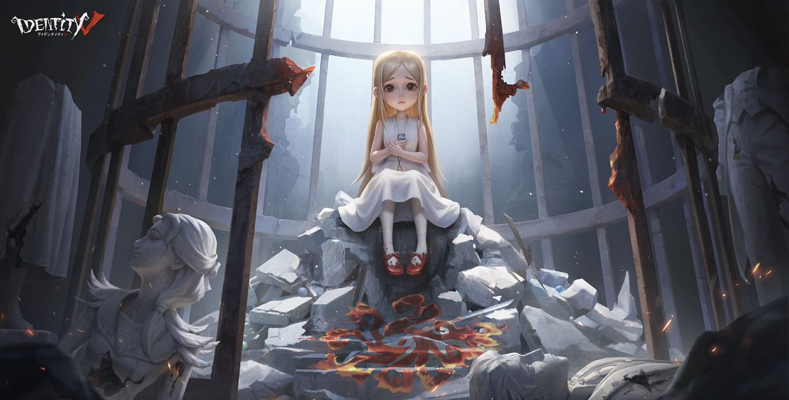
2025年11月27日～2025年12月16日
概要
イベントコイン-「記録」獲得方法
- ゲームにログインすると【S40・真髄1】×10を受け取れます
- 対戦に参加すると第1週の上限は350、第2週の上限は700、第3週の上限は1100までです。合計ドロップ上限は1100までとなっております。
「記録」衣装など
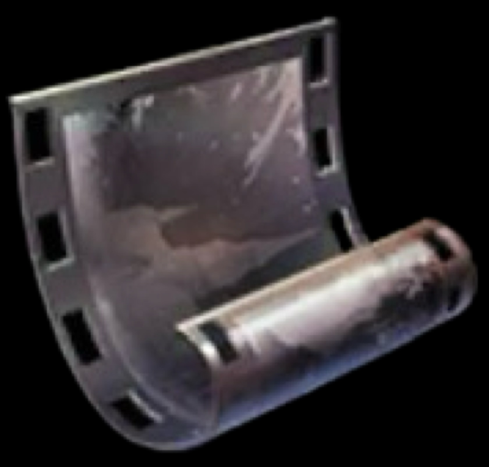
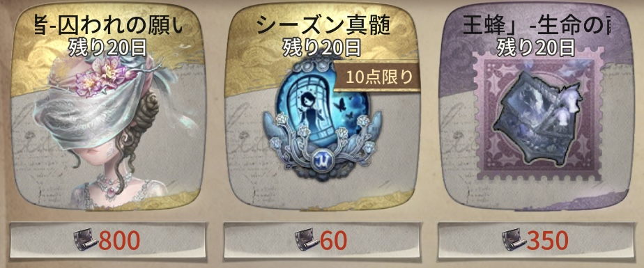
- 上記の【UR衣装】昆虫学者-囚われの願いは800「援助の足跡」購入可能
- シーズン真髄×10が60「援助の足跡」購入可能
- 【SSR携帯品】「女王蜂」-生命の繭が350「援助の足跡」購入可能
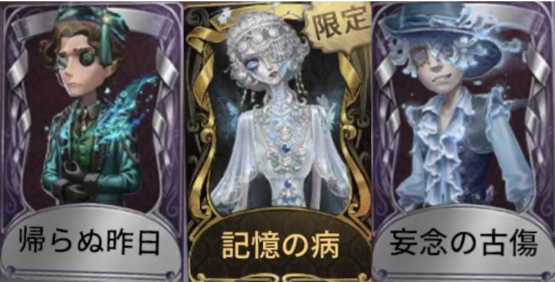
「S40・真髄1」排出衣装
- 「女王蜂」UR衣装-記憶の病
- 小説家SSR衣装-帰らぬ昨日
- 探鉱者SSR衣装-妄念の古傷
「台所の不思議な旅」― 無料ランチ支援イベント
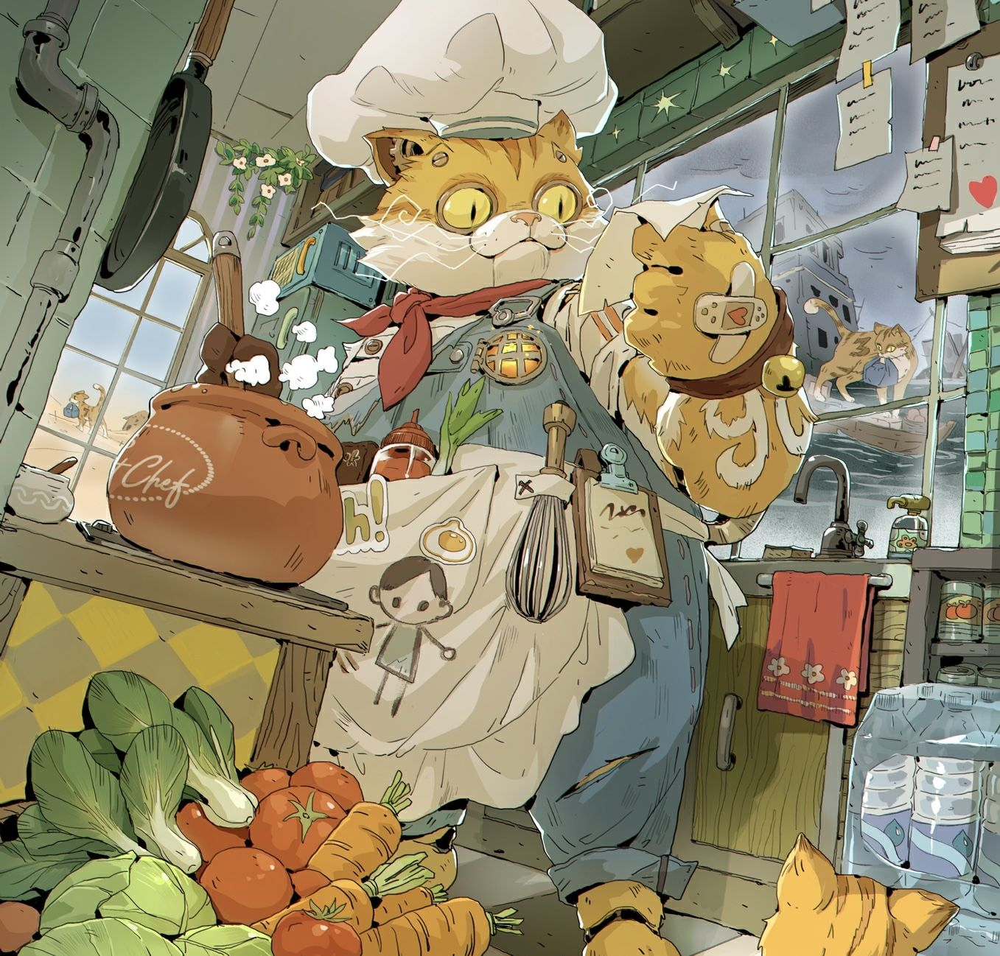
2025年11月13日～2025年12月3日
概要
イベントシナリオ「援助の足跡」獲得方法
- 毎日のストーリーを読み終えるとを20個、合計で100個獲得できます。
- 「ボンボンクッキング」では1日10個まで獲得できます。
- 対戦に参加すると1日60個まで獲得できます。
「援助の足跡」衣装など
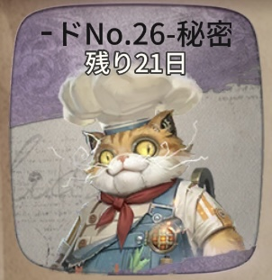
- 上記の【SSR衣装】ガードNo.26-秘密のコックは120「援助の足跡」購入可能
- 【特殊アクション】ガードNo.26-目玉焼き、【アイコン】温かい片隅、【アイコン枠】栄養デリバリー、【SR家具】慌ただしい調理場など交換可能！
ハロウィンイベント
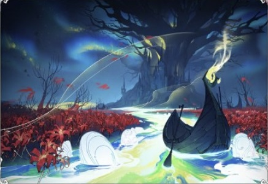
2025年10月16日～2025年10月23日
概要
「永夜に詠う詩--夢現の呟き」イベント
- 対戦に参加すると、「パンプキンクッキー」を獲得できます。
パンプキンクッキー衣装
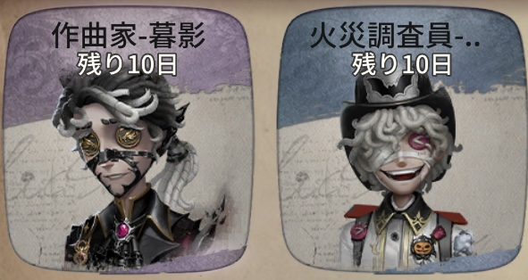
- 上記の【SSR衣装】は120パンプキンクッキーで購入可能、【SR衣装】は40パンプキンクッキーで交換可能！
衣装の残影衣装
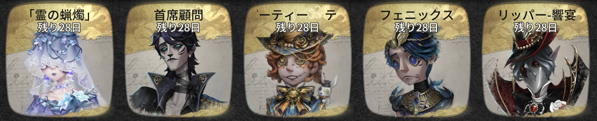
- 上記の衣装が12888欠片で購入可能！
スコープ衣装、携帯品
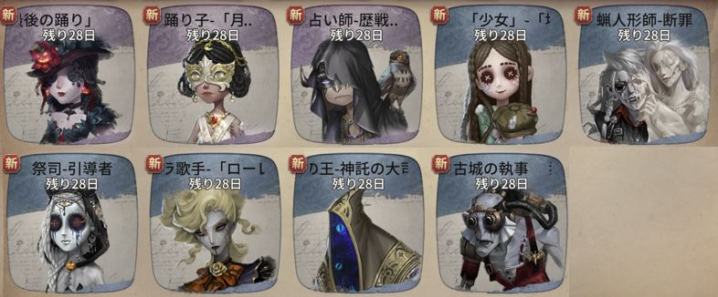
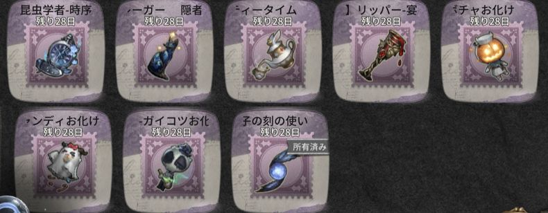
- 上記の【SSR衣装】は100スコープで購入可能、【SR衣装】は100スコープで購入可能！
- 上記の【SR携帯品】は80スコープで購入可能！
手掛かり家具
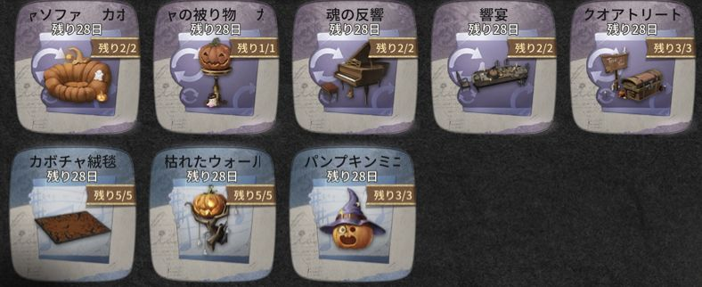
- 上記の【SSR家具】は4188手掛かりで購入可能、【SR家具】は手掛かりで購入可能！
Game on! We are Team BLK! イベント
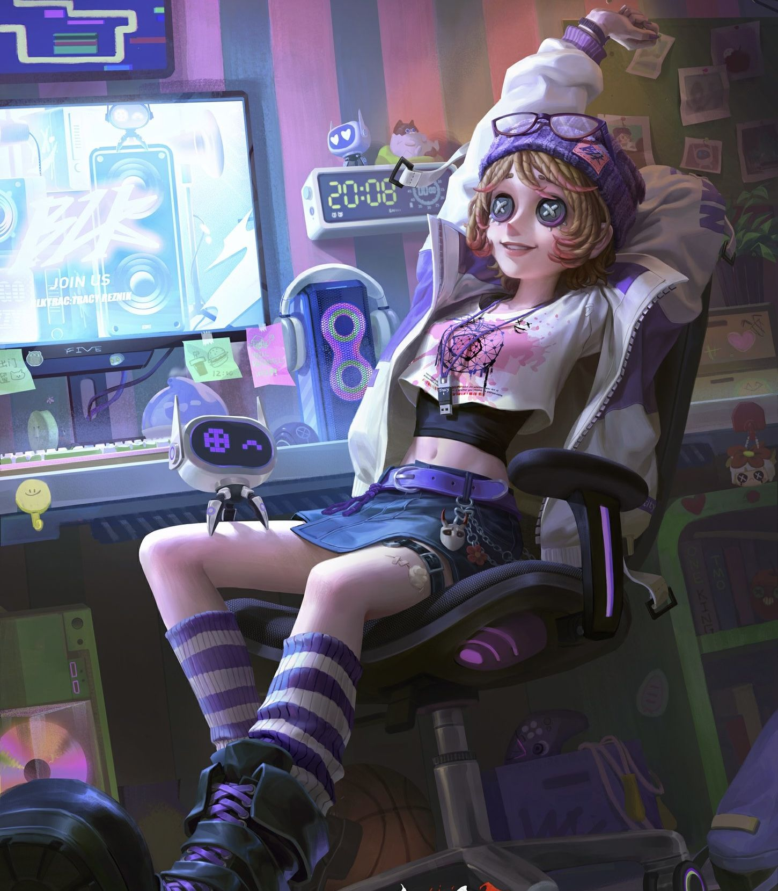
2025年9月10日～2025年10月8日
概要
eスポーツシリーズ衣装パック
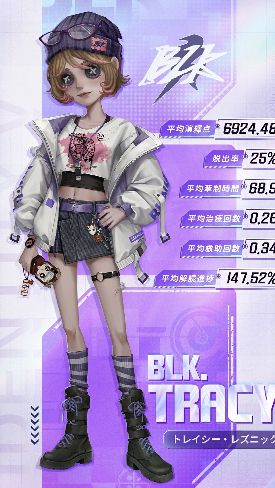
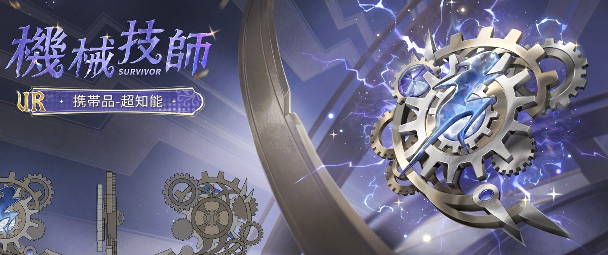
- パック内容：【SSR衣装】「機械技師」-BLK.TRACY、【UR携帯品】「機械技師」-超知能。
- 3276エコー、割引価格2618エコーでご購入いただけます。
エコー衣装
- 【SSR衣装】「機械技師」-BLK.TRACYが1388エコーでご購入いただけます
- 【UR携帯品】「機械技師」-超知能が1888エコーでご購入いただけます
- 【SSR衣装】骨董商-破裂する音が1388エコーでご購入いただけます
手がかり衣装
- 【SSR衣装】骨董商-破裂する音が4888欠片でご購入いただけます
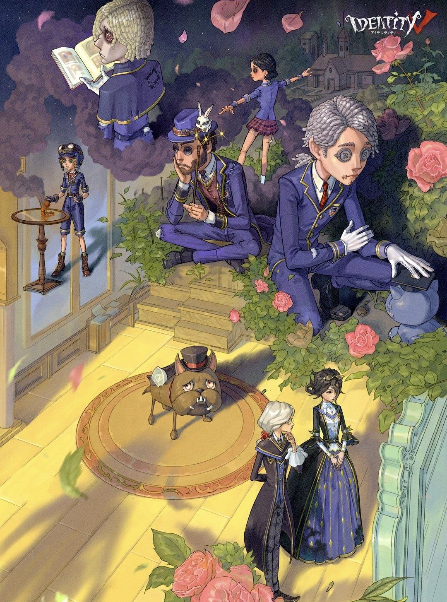
象牙の塔シリーズストーリーイベント
2025年8月28日～2025年9月24日
概要
やること
- イベント期間中、授業ログイン、ストーリー解放、サークル依頼を通じて最大で象牙の塔コイン×12を獲得できます。
象牙の塔コイン
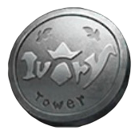
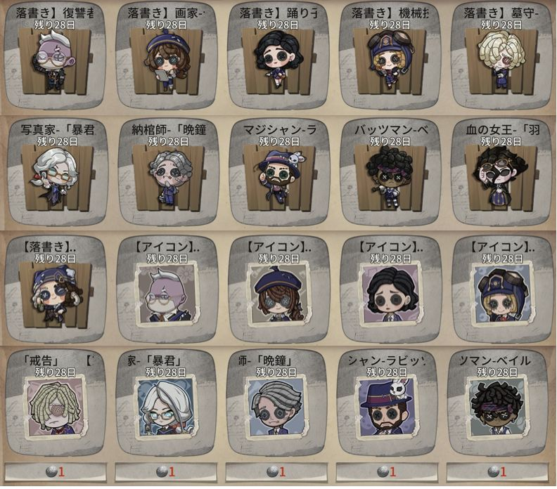
- アイコン、落書き
スコープ
- アイコン、落書き、家具
エコー衣装
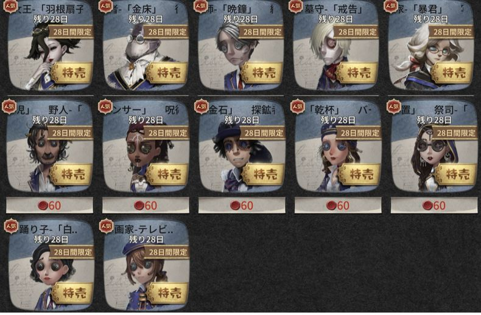
- 【SR衣装】血の女王-「羽根扇子」が60エコーでご購入いただけます
- 【SR衣装】復讐者-「金床」が60エコーでご購入いただけます
- 【SR衣装】納棺師-「晩鐘」が60エコーでご購入いただけます
- 【SR衣装】墓守-「戒告」が60エコーでご購入いただけます
再登場衣装
- 60エコーでご購入いただけます
鵲がつなぐ川イベント
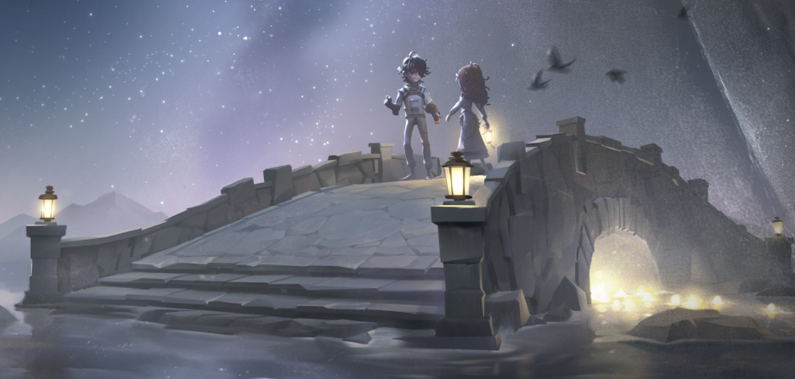
2025年8月21日～2025年9月3日
概要
入手できるもの
- 【UR衣装】「心理学者」-長い夜、【UR衣装】患者-星々
- 【ペット】ゲリと【ペット】フレキ
- 【SSR携帯品】「心理学者」-夜の星、【SSR携帯品】患者-星の観察、【SSR携帯品】写真家-筆先の恋
- 【アクションエフェクト】ライト、欠片【アクションエフェクト】祝福
- 【アイコン枠】紫雲の星跡、【アイコン枠】氷雪の光紗
- 【UR家具】潮の歌
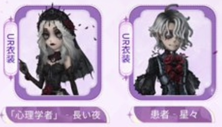
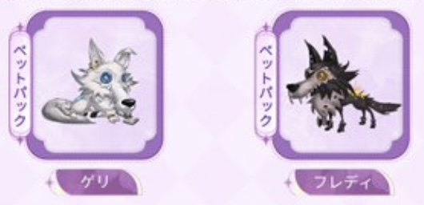
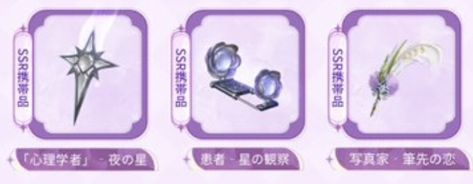
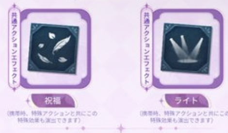
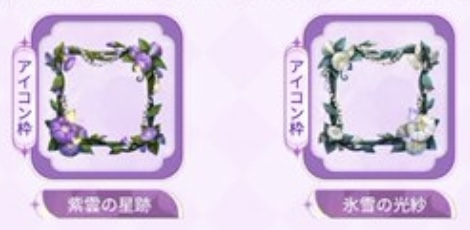
やること
- 5日間の間、毎日ミニゲーム「星雲展望」に参加することで【アクションエフェクト】ライト、欠片【アクションエフェクト】祝福を獲得できます。
永遠の誓いパック、星祭りの朝顔パック
- 永遠の誓いパック：【ペット】ゲリ、【ペット】フレキを1408エコーで獲得。
- 星祭りの朝顔パック：【アイコン枠】紫雲の星跡、【アイコン枠】氷雪の光紗を318エコーで獲得。
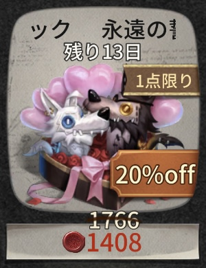
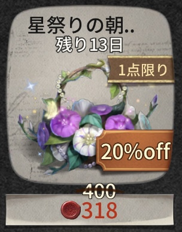
手掛かり、エコーペット
- 【ペット】ゲリと【ペット】フレキが888エコーまたは3188手掛かりでご購入いただけます。
衣装の残影、エコー衣装、携帯品
- 【UR衣装】「心理学者」-長い夜、【UR衣装】患者-星々が2888エコーまたは12888欠片でご購入いただけます。
- 【SSR携帯品】「心理学者」-夜の星、【SSR携帯品】患者-星の観察、【SSR携帯品】写真家-筆先の恋が1068エコーまたは3888欠片でご購入いただけます。
手掛かり、エコー家具
- 【UR家具】潮の歌が2688エコーまたは11688手掛かりでご購入いただけます。
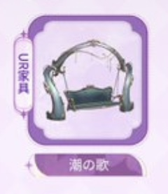
2025IJL夏季大会RC戦隊優勝イベント
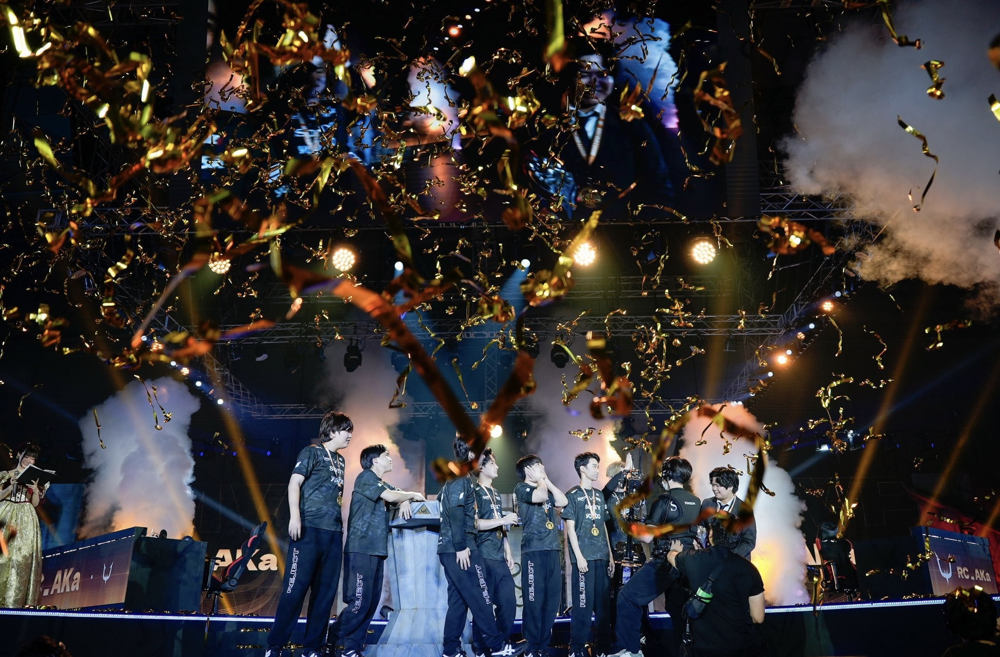
2025年8月7日～2025年8月27日
概要
REJECTが2025IJL夏季大会チャンピオンの座に輝きました！
入手できるもの
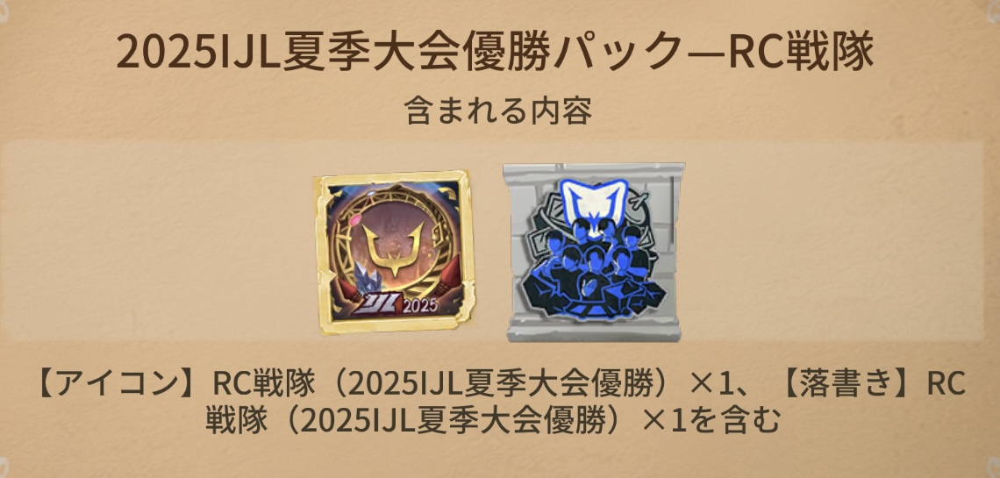
- 優勝戦隊アイコン、戦隊特製落書き含むを98エコーでご購入いただけます。
優勝戦隊とFMVPの予測に成功したプレイヤーは！？
- 無料でこのパックを獲得できます！！
Identity V×上海天文館コラボイベント
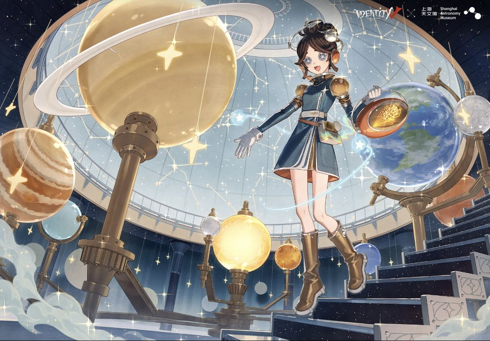
2025年7月17日～2025年8月13日
概要
本番を前に不安がっていた彼女は、なぜか展示ホールに迷い込んだあなたを相手に、天文博物館の解説の練習を始めることにした。
入手できるもの
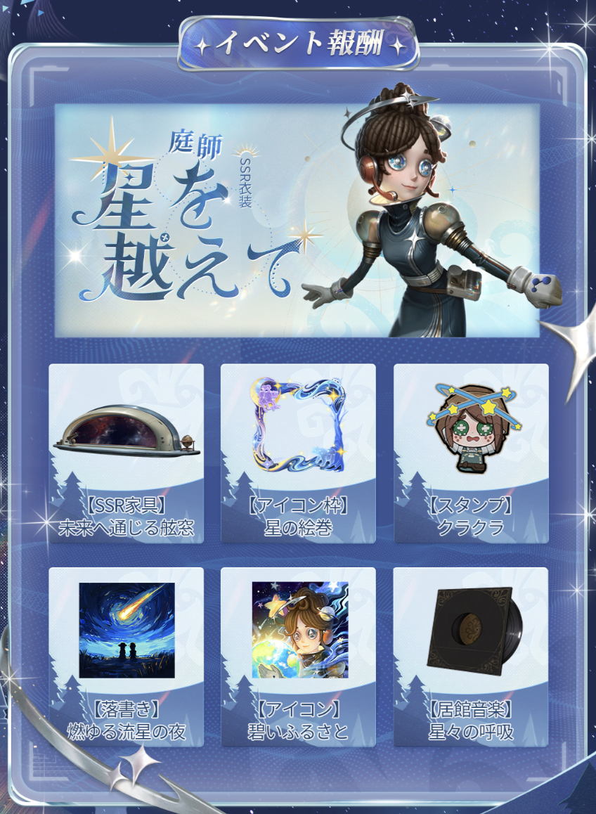
- 【SSR衣装】庭師-星を越えて
- 【アイコン枠】星の絵巻/【アイコン】碧いふるさと/【SSR家具】宇宙へ通じる舷窓
- 【スタンプ】クラクラ、【落書き】燃ゆる流星の夜
やること
- 「先駆の鍵」を100本消費することで「星海探索」画面で歴史と科学に関する天文知識ノードを1つ灯すことができ、対応するイベントボーナスを獲得できます。
- 累計6/12/18/24個のノードを灯すと、それぞれ【アイコン枠】星の絵巻/【アイコン】碧いふるさと/【SSR家具】宇宙へ通じる舷窓/【SSR衣装】庭師-星を越えてを獲得できます。
七周年イベント
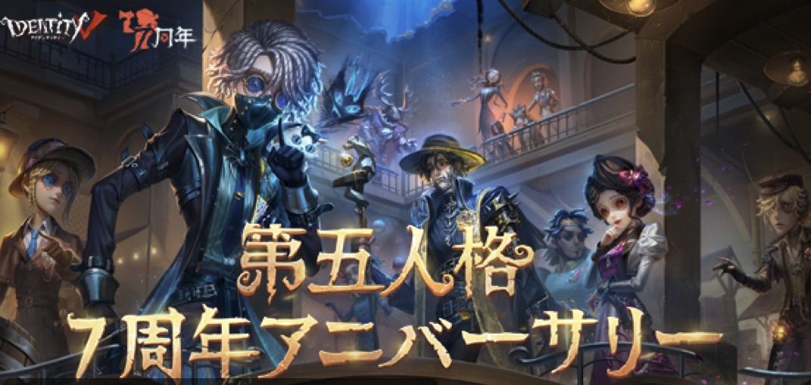
2025年7月10日～2025年8月6日
概要
銀行盗難事件の裏には、更なる陰謀が隠されているかもしれない。Missトゥルースと共に地下の秘密を探ろう！
入手できるもの
- S38・真髄1×10
- 七周年アイコン、ランクポイント保護カード、UR衣装体験カード
- イベントSR衣装、待機モーション解放カード、SR携帯品など
- SSRイベント家具―機械ドア、SR衣装解放カード、特殊アクション解放カード、キャラ解放カードなど
- SSR衣装解放カード、動く落書き、ランクポイント保護カードなど
- 【携帯品】踊り子-香水、【衣装】写真家-依頼人
やること
- ゲームにログインするとS38・真髄1×10、七周年アイコン、ランクポイント保護カード、UR衣装体験カードを受け取ることができます！
- ストーリーを進めて調査進捗を累積すると、イベントSR衣装、待機モーション解放カード、SR携帯品などの豪華ボーナスを獲得できます。
- 一定数の硬貨を獲得すると、SSRイベント家具――機械ドア、SR衣装解放カード、特殊アクション解放カード、キャラ解放カードなどの豪華ボーナスを獲得できます。
- イベントに参加して毎週の指定タスクを完了すると、SSR衣装解放カード、動く落書き、ランクポイント保護カードなどの豪華ボーナスを獲得できます。
- 【アトロポスの糸】ストーリーを全て体験すると、【携帯品】踊り子-香水には毒がある、【衣装】写真家-依頼人などの豪華ボーナスを獲得できます。
七周年チャージパック
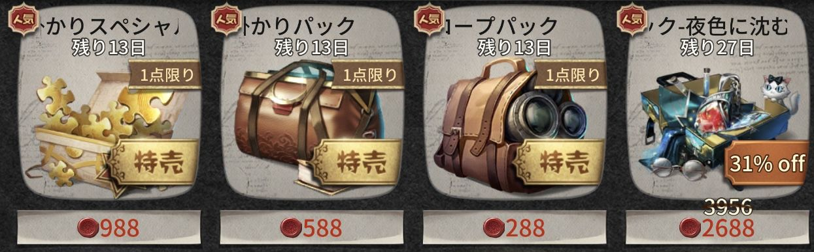
- 七周年特売チャージパック：購入すると956エコーとS38・真髄1×5を獲得。
- 七周年セールチャージパック1：購入すると1009エコーとS38・真髄1×3を獲得。
- 七周年セールチャージパック2：購入すると3448エコーとS38・真髄1×7を獲得。
- 七周年セールチャージパック3：購入すると6918エコーとS38・真髄1×15を獲得。
エコー衣装
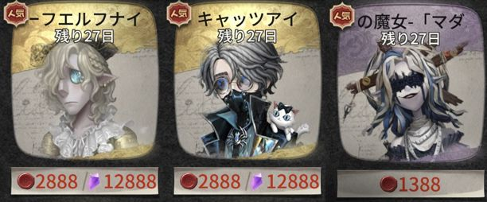
- 【UR衣装】キャッツアイが2888エコーでご購入いただけます。
- 【SSR携帯品】納棺師-「密約」が1068エコーでご購入いただけます。
- 【UR携帯品】冒険家-コーヒーポットが1888エコーでご購入いただけます。
- 【SSR携帯品】夢の魔女-枯れた花冠が788エコーでご購入いただけます。
- 【SSR携帯品】「レディ・ファウロ」-トランプが788エコーでご購入いただけます。
- 【SSR衣装】夢の魔女-「マダム・ソーイング」が1388エコーでご購入いただけます。S37推理の径で600マスに到達したプレイヤーは、この衣装の期間限定購入資格を獲得できます。
衣装の残影
- 【UR衣装】キャッツアイが12888欠片でご購入いただけます。
- 【SSR携帯品】納棺師-「密約」が3888欠片でご購入いただけます。
- 【UR携帯品】冒険家-コーヒーポットが8388欠片でご購入いただけます。
- 【SSR携帯品】夢の魔女-枯れた花冠が2988欠片でご購入いただけます。
- 【SSR携帯品】「レディ・ファウロ」-トランプが2988欠片でご購入いただけます。
エコー家具
- 【SSR家具】金庫が1188エコーでご購入いただけます。
- 【SSR家具】歯車時計が1188エコーでご購入いただけます。
- 【SSR家具】金属製フォトフレームが1188エコーでご購入いただけます。
- 【SR家具】周年の蝋燭-7が288エコーでご購入いただけます。
手掛かり家具
- 【SSR家具】金庫が4188手掛かりでご購入いただけます。
- 【SSR家具】歯車時計が4188手掛かりでご購入いただけます。
- 【SSR家具】金属製フォトフレームが4188手掛かりでご購入いただけます
- 【SR家具】周年の蝋燭-7が1088手掛かりでご購入いただけます。
夏のイベント情報
2025年6月5日～2025年6月25日
概要
汽笛の音と共に、ヘイラリゾート島にまた新しい客船が到着した。観光客たちは船を降り、伸びをしながら、ここで始まる1週間のバカンスに思いを馳せていた、、、
入手できるもの
- 深海ギフトにて【携帯品】幸運児-貝拾い、【家具】ヤシの木、【特殊アクション】写真家-いらっしゃいませ、【アイコン枠】海の島に遺る夢、【アイコン】碧海の残照、【スタンプ】
- 【SR衣装】「囚人」-「案内係」、【料理】サバイバー-ラキヤ
やること
- 毎日ゲームにログインすると、【SR衣装】「囚人」-「案内係」、【料理】サバイバー-ラキヤなどのボーナスを獲得できます。
- イベント期間中、マルチ戦、ランク戦、混沌なる紛争、五人ランク戦に参加すると、「深海ギフト」を獲得できます。獲得上限は1日15個までです。
- ストーリーは7日間に分かれており、時間経過と共に順番に開放されます。第一幕から第七幕のシナリオ体験を完了すると、「深海ギフト」コインや【タグ】夕焼けの海に遺る夢、【居館音楽】夕暮れの海辺の声、【スタンプ】任せろを獲得できます。
- 「深海探検」ゲームをクリアすると、ゲームの難易度と得点状況に応じてアイテム「深海ギフト」を獲得できます。1回ごとの獲得数には上限があり、毎日「深海探検」を通して10個まで「深海ギフト」を獲得することができます。
イベントパック
-
【盛夏の印】が31%オフの価格でショップにて期間限定販売されます。販売価格は3956エコー、割引価格は2688エコーになります。
パック内容：【UR衣装】写真家-盛夏の光影、【SSR携帯品】写真家-海風の囁き。 - 【手掛かりスペシャルパック】が期間限定でショップに登場。パックには8000手掛かりが含まれ、988エコーでご購入いただけます（1つのみ購入可能）。
- 【手掛かり大パック】が期間限定でショップに登場。パックには4880手掛かりが含まれ、588エコーでご購入いただけます（1つのみ購入可能）。
エコー衣装
- 【UR衣装】写真家-盛夏の光影が2888エコーでご購入いただけます。
- 【SSR携帯品】写真家-海風の囁きが1068エコーでご購入いただけます。
- 【UR衣装】バッツマン-チャンピオン舵手2888エコーでご購入いただけます。
- 【UR衣装】探鉱者-サマーフリスビー2888エコーでご購入いただけます。
- 【UR衣装】呪術師-ココナッツの休日2888エコーでご購入いただけます。
- 【UR衣装】バーメイド-シーソルトモクテル2888エコーでご購入いただけます。
- 【SSR携帯品】バッツマン-深海の祝祷1068エコーでご購入いただけます。
- 【SSR携帯品】探鉱者-イルカフロート1068エコーでご購入いただけます。
- 【SSR携帯品】呪術師-海岸のリース1068エコーでご購入いただけます。
- 【SSR携帯品】バーメイド-ビーチサングラス1068エコーでご購入いただけます。
- 【SSR携帯品】傭兵-絶影1068エコーでご購入いただけます。
- 【SSR携帯品】夜の番人-アイスドリンク1068エコーでご購入いただけます。
衣装の残影
- 【UR衣装】写真家-盛夏の光影が12888欠片でご購入いただけます。
- 【SSR携帯品】写真家-海風の囁きが3888欠片でご購入いただけます。
- 【UR衣装】バッツマン-チャンピオン舵手が12888欠片でご購入いただけます。
- 【UR衣装】探鉱者-サマーフリスビーが12888欠片でご購入いただけます。
- 【UR衣装】呪術師-ココナッツの休日が12888欠片でご購入いただけます。
- 【UR衣装】バーメイド-シーソルトモクテルが12888欠片でご購入いただけます。
- 【SSR携帯品】バッツマン-深海の祝祷が3888欠片でご購入いただけます。
- 【SSR携帯品】探鉱者-イルカフロートが3888欠片でご購入いただけます。
- 【SSR携帯品】呪術師-海岸のリースが3888欠片でご購入いただけます。
- 【SSR携帯品】バーメイド-ビーチサングラスが3888欠片でご購入いただけます。
- 【SSR携帯品】傭兵-絶影が3888欠片でご購入いただけます。
- 【SSR携帯品】夜の番人-アイスドリンクが3888欠片でご購入いただけます。
エコー家具
- 【UR家具】ビーチシャワーが2688エコーでご購入いただけます。初週は2150エコーまで割り引かれます。
- 【SSR家具】アヒルフロートが1188エコーでご購入いただけます。初週は950エコーまで割り引かれます。
- 【SSR家具】帆船ソファ、海辺の窓が1188エコーでご購入いただけます。初週は950エコーまで割り引かれます。
- 【SSR家具】砂浜の絨毯が1188エコーでご購入いただけます。初週は950エコーまで割り引かれます。
- 【SR家具】砂の城の張りぼて、ビーチランプ、砂浜の休憩スペース、砂の見張り台、砂の城、砂のアザラシ、砂のペンギンが288エコーでご購入いただけます。初週は230エコーまで割り引かれます。
手掛かり家具
- 【UR家具】ビーチシャワーが11688手掛かりでご購入いただけます。
- 【SSR家具】アヒルフロートが4188手掛かりでご購入いただけます。
- 【SSR家具】帆船ソファ、海辺の窓が4188手掛かりでご購入いただけます。
- 【SSR家具】砂浜の絨毯が4188手掛かりでご購入いただけます。
- 【SR家具】砂の城の張りぼて、ビーチランプ、砂浜の休憩スペース、砂の見張り台、砂の城、砂のアザラシ、砂のペンギンが1088手掛かりでご購入いただけます。
2024IJL秋季大会優勝——AXIZ WAVE戦隊限定イベント
2025年6月5日～2025年6月25日
概要
2024IJL秋季大会優勝——AXIZ WAVE戦隊限定ペット【ウェーブくん】がショップに登場。！
入手できるもの
- 【ウェーブくん】
エコーペット
- AXIZ WAVE戦隊限定ペット【ウェーブくん】が販売価格888エコーでお買い求めいただけます。初週は12%オフの割引が適用されます。
Call of the Abyss Ⅷ優勝祭典イベント
2025年5月15日～2025年5月28日
概要
ZETA DIVISIONが2025Call of the Abyss Ⅷワールド決勝トーナメントチャンピオンの座に輝きました！
入手できるもの
- Call Of the Abyss Ⅷ優勝アイコン
- 手掛かり、衣装の残影などのボーナス
やること
- 毎日18時から22時の間、対戦集計時に20%の推理点数ボーナスを獲得できます。
- タスクに参加し、優勝戦隊使用キャラを体験すると、手掛かり、衣装の残影などのボーナスを獲得できます。
- Call Of the Abyss Ⅷ優勝アイコンも期間限定で販売され、販売価格100手掛かりでご購入いただけます。
エコー衣装
- 【衣装】マジシャン-動力の芯が1388エコーでご購入いただけます。
- 【衣装】骨董商-カラスが1388エコーでご購入いただけます。
- 【衣装】泣きピエロ-蛇の精が1388エコーでご購入いただけます。
- 【衣装】バーメイド-ブラックローズが1388エコーでご購入いただけます。
- 【衣装】空軍-ブラックスワンが1388エコーでご購入いただけます。
- 【衣装】踊り子-ヴァルキリーが2308エコーでご購入いただけます。
- 【携帯品】踊り子-ギャラルホルンが848エコーでご購入いただけます。
- 【衣装】「フラバルー」-美しき夢の灰燼が318エコーでご購入いただけます。
- 【衣装】記者-夢境の中のアリスが1108エコーでご購入いただけます。
- 【衣装】庭師-ストロベリーが86エコーでご購入いただけます。
- 【衣装】患者-星々が2888エコーでご購入いただけます。
- 【携帯品】患者-星の観察が1068エコーでご購入いただけます。
- 【衣装】航空エンジニア-星空の翼が2888エコーでご購入いただけます。
- 【携帯品】航空エンジニア-空の向こうが1068エコーでご購入いただけます。
- 【ペット】ALPHA、【ペット】BETAが888エコーでご購入いただけます。
- 【携帯品】ガードNo.26-雷太鼓が788エコーでご購入いただけます。
- 【携帯品】夜の番人-雷霆万鈞が788エコーでご購入いただけます。
- 【携帯品】骨董商-電光石火が788エコーでご購入いただけます。
衣装の残影
- 【衣装】患者-星々が12888欠片でご購入いただけます。
- 【携帯品】患者-星の観察が3888欠片でご購入いただけます。
- 【衣装】航空エンジニア-星空の翼12888欠片でご購入いただけます。
- 【携帯品】航空エンジニア-空の向こうが3888欠片でご購入いただけます。
- 【衣装】「フラバルー」-美しき夢の灰燼が318エコーでご購入いただけます。
- 【衣装】記者-夢境の中のアリスが4888欠片でご購入いただけます。
- 【衣装】庭師-ストロベリーが438欠片でご購入いただけます。
- 【衣装】踊り子-ヴァルキリーが12888欠片でご購入いただけます。
- 【携帯品】踊り子-ギャラルホルンが3888欠片でご購入いただけます。
みんなのコメント